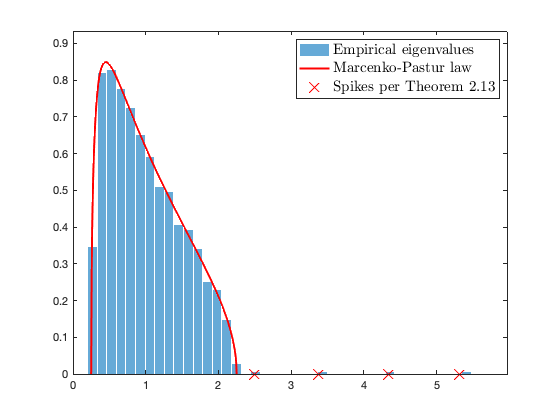
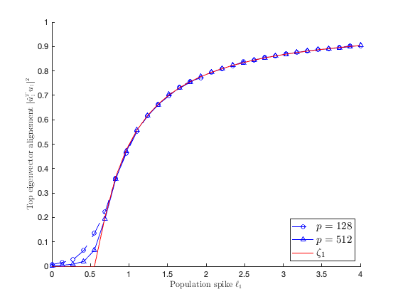
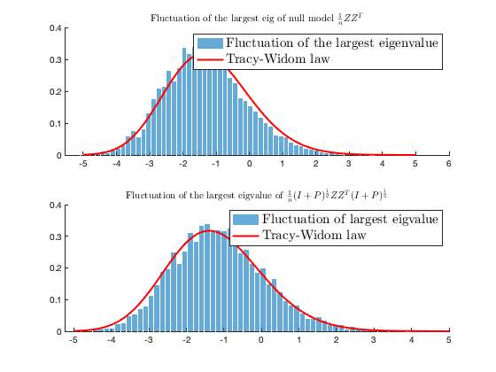

Section 2.5: Spiked models
This page contains simulations in Section 2.5.
Contents
Empirical eigenvalues of spiked sample covariance versus the Marcenko-Pastur law
with isolated "spike" empirical eigenvalues predicted per Theorem 2.13.
close all; clear; clc coeff = 1; p = 1024*coeff; n = p*4; c = p/n; Z = randn(p,n); eig_P = [1,2,3,4]; P = diag([eig_P, zeros(1,p-length(eig_P))]); C = eye(p) + P; X = sqrtm(C)*Z; SCM = X*(X')/n; eigs_SCM = eig(SCM); eigs_SCM = sort(eigs_SCM); edges=linspace((1-sqrt(c))^2-eps,(1+sqrt(c))^2+eps,300); a = (1-sqrt(c))^2; b = (1+sqrt(c))^2; isolated_eigs = 1+eig_P+c*(1+eig_P)./eig_P; isolated_eigs(eig_P<=sqrt(c)) = NaN; figure histogram(eigs_SCM, 40, 'Normalization', 'pdf', 'EdgeColor', 'white'); hold on; mu=sqrt( max(edges-a,0).*max(b-edges,0) )/2/pi/c./edges; plot(edges,mu,'r', 'Linewidth',2); plot(isolated_eigs,zeros(length(isolated_eigs),1),'rx', 'MarkerSize',10); legend('Empirical eigenvalues', 'Marcenko-Pastur law', 'Spikes per Theorem 2.13', 'FontSize', 15, 'Interpreter', 'latex') axis([0 max(eigs_SCM)+.5 0 max(mu)*1.1]);
Alignment of isolated eigenvectors in Theorem 2.14
close all; clear; clc coeff_loop = [1 4]; popu_spike_loop = linspace(0,4,30); nb_average_loop = 200; eigvec_alignment = zeros(length(coeff_loop), length(popu_spike_loop), nb_average_loop); for i = 1:length(coeff_loop) for j = 1:length(popu_spike_loop) for average_loop = 1:nb_average_loop p = 128*coeff_loop(i); n = p*3; c = p/n; eig_P = popu_spike_loop(j); Z = randn(p,n); u = randn(p,1); u = u/norm(u); C = eye(p) + eig_P*u*(u'); X = sqrtm(C)*Z; SCM = X*(X')/n; [hat_u,~] = eigs(SCM,1); eigvec_alignment(i,j,average_loop) = (u'*hat_u)^2; end end end theo_alignment = (1-c*popu_spike_loop.^(-2))./(1+c*popu_spike_loop.^(-1)); theo_alignment(popu_spike_loop<sqrt(c))=0; figure hold on; plot(popu_spike_loop,squeeze(mean(eigvec_alignment(1,:,:),3)),'b--o'); plot(popu_spike_loop,squeeze(mean(eigvec_alignment(2,:,:),3)),'b-^'); plot(popu_spike_loop,theo_alignment,'r') xlabel('Population spike $\ell_1$', 'Interpreter', 'latex'); ylabel('Top eigenvector alignement $| \hat u_1^T u_1 |^2$', 'Interpreter', 'latex'); legend('$p=128$', '$p=512$', '$\zeta_1$', 'Interpreter', 'latex', 'Location','southeast', 'FontSize', 15)
Theorem 2.15: fluctuation of the largest eigenvalue and the Tracy-Widom law
close all; clear; clc coeff = 2; p = 128*coeff; n = 256*coeff; c = p/n; nb_loop = 5000; eig_MP_max = zeros(nb_loop,1); eig_SCM_max = zeros(nb_loop,1); eig_P = sqrt(c)/2; sqrt_C= diag(sqrt([1+eig_P, ones(1,p-1)])); for loop=1:nb_loop % empirical evaluation Z = randn(p,n); X = sqrt_C*Z; eig_MP_max(loop)= eigs(Z*(Z')/n, 1); eig_SCM_max(loop)= eigs(X*(X')/n, 1); end clc edges=linspace(-5,5,100); factor = c^(-1/6)*(1+sqrt(c))^(4/3); figure subplot(2,1,1) hold on histogram((eig_MP_max-(1+sqrt(c))^2)*n^(2/3)/factor, 60, 'Normalization', 'pdf', 'EdgeColor', 'white'); plot(edges,tracy_widom_appx(edges,1), 'r', 'Linewidth',2); legend('Fluctuation of the largest eigenvalue', 'Tracy-Widom law', 'FontSize', 15, 'Interpreter', 'latex'); title('Fluctuation of the largest eig of null model $\frac1n Z Z^T$', 'Interpreter', 'latex'); subplot(2,1,2) hold on histogram((eig_SCM_max-(1+sqrt(c))^2)*n^(2/3)/factor, 60, 'Normalization', 'pdf', 'EdgeColor', 'white'); plot(edges,tracy_widom_appx(edges,1), 'r', 'Linewidth',2); legend('Fluctuation of largest eigvalue', 'Tracy-Widom law', 'FontSize', 15, 'Interpreter', 'latex'); title('Fluctuation of the largest eigvalue of $\frac1n (I+P)^{\frac12} Z Z^T (I+P)^{\frac12}$', 'Interpreter', 'latex'); function [pdftwappx, cdftwappx] = tracy_widom_appx(x, i) % % [pdftwappx, cdftwappx]=tracywidom_appx(x, i) % % SHIFTED GAMMA APPROXIMATION FOR THE TRACY-WIDOM LAWS, by M. Chiani, 2014 % code publicly available https://www.mathworks.com/matlabcentral/fileexchange/44711-approximation-for-the-tracy-widom-laws % % TW ~ Gamma[k,theta]-alpha % % [pdf,cdf]=tracywidom_appx(x,i) for i=1,2,4 gives TW1, TW2, TW4 % kappx = [46.44604884387787, 79.6594870666346, 0, 146.0206131050228]; % K, THETA, ALPHA thetaappx = [0.18605402228279347, 0.10103655775856243, 0, 0.05954454047933292]; alphaappx = [9.848007781128567, 9.819607173436484, 0, 11.00161520109004]; cdftwappx = cdfgamma(x+alphaappx(i), thetaappx(i), kappx(i)); pdftwappx = pdfgamma(x+alphaappx(i), thetaappx(i), kappx(i)); end function pdf=pdfgamma(x, ta, ka) if(x > 0) pdf=1/(gamma(ka)*ta^ka) * x.^(ka - 1) .* exp(-x/ta); else pdf=0 ; end end function cdf=cdfgamma(x, ta, ka) if(x > 0) cdf=gammainc(x/ta,ka); else cdf=0; end end